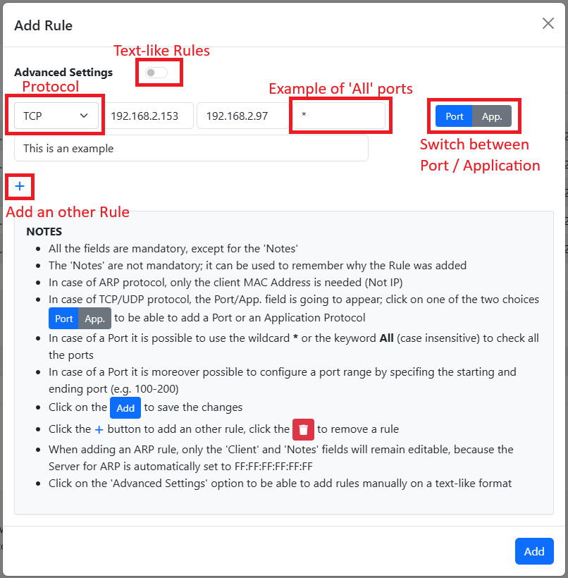
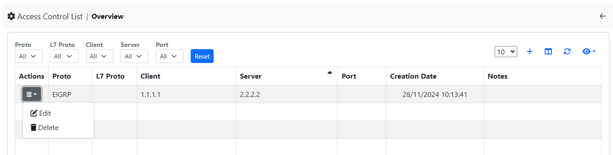
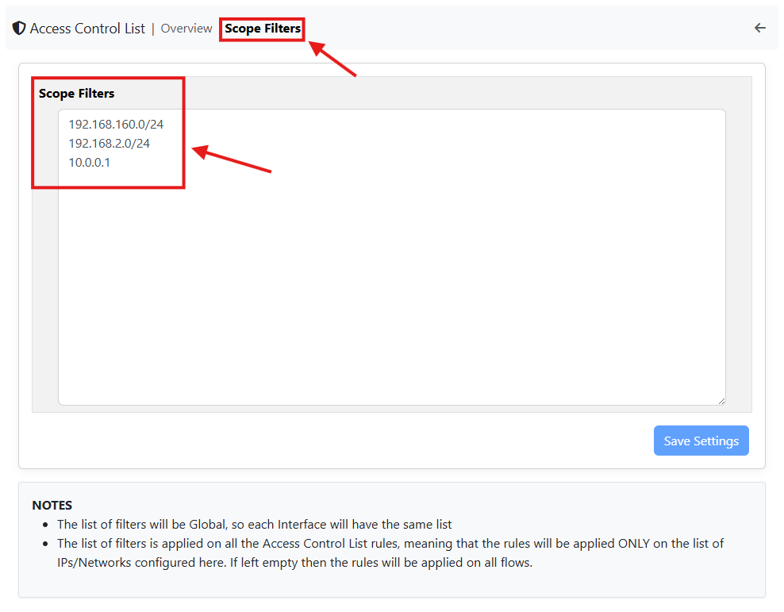
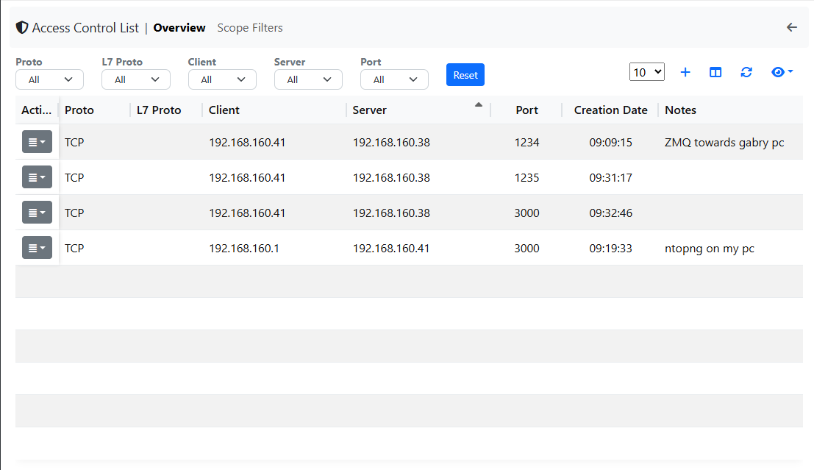
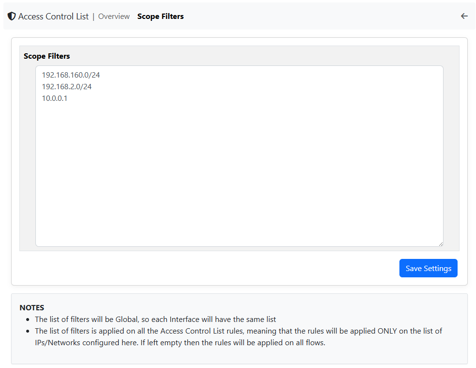
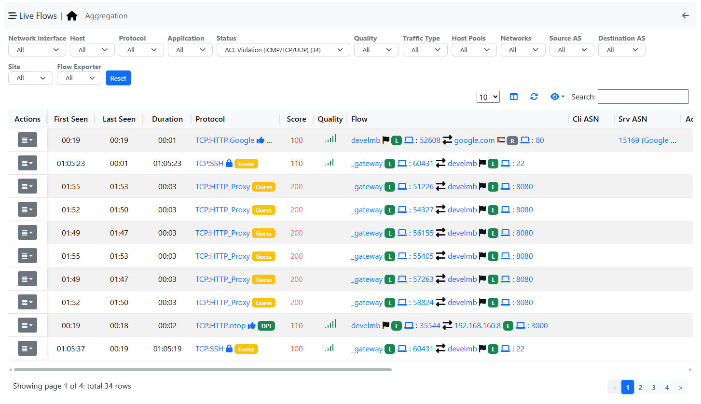

Список контроля доступа
ntopng может определять список контроля доступа, используемый для запуска оповещения в случае несоблюдения одного из определенных правил. Также можно ограничить проверку этих правил только указанными сетями CIDR/Хостами (Фильтры области действия)
Примечание
Эта функция доступна при наличии лицензии Enterprise L или выше.
Примечание
Эта функция доступна только в том случае, если включено предупреждение о нарушении ACL.
Конфигурация
Чтобы включить эту функцию, сначала включите предупреждение о нарушении ACL. Для этой функции есть два оповещения:
Нарушение ACL (ARP) для трафика ARP.
Нарушение ACL (ICMP/TCP/UDP), для трафика ICMP/TCP/UDP.
Примечание
Даже если правило установлено, но предупреждение не включено, предупреждение не будет выдано при ntopng.

Предупреждение о нарушении ACL
После включения оповещения в разделе «Настройки» станет доступна новая запись под названием «Список контроля доступа». Щелкните ее, чтобы перейти на страницу «Список контроля доступа».

Список контроля доступа
Добавление правил
Нажав на + Кнопка можно Добавить новое Правило. Нажав на столбец действия вместо уже существующего правила, можно отредактировать/удалить правило.

Добавить правило
Отсюда можно настроить правило. Нажмите на Расширенные настройки для перехода к текстовому полю, где можно напрямую написать правило. Каждое правило должно помещаться на новую строку, то есть по одному правилу в строке; каждое поле должно быть разделенный ;
ПРОТОКОЛ;КЛИЕНТ;СЕРВЕР;ПОРТ|ПРИЛОЖЕНИЕ
- Все параметры являются обязательными, за исключением некоторых случаев:
Протокол ARP: в случае протокола ARP необходимо добавить только протокол и MAC-адрес клиента (ARP имеет FF:FF:FF:FF:FF:FF в качестве сервера);
протокол TCP/UDP: в случае этих двух протоколов PORT|APPLICATION являются обязательными и может быть указан только один из двух (приложение в текстовом формате, например HTTP);
Другие протоколы: для всех остальных протоколов требуются только протокол, IP-адрес клиента и IP-адрес сервера.
Примечание
ПОРТ|ПРИЛОЖЕНИЕ доступны только для протоколов TCP/UDP.
- В случае ПОРТ|ПРИЛОЖЕНИЕ:
Заявление необходимо оформить в текстовом формате, например. HTTP, TLS, …;
- В случае портов доступны 3 возможности:
Настройте один порт (например, 53);
Настройте диапазон портов, установите начальный порт и конечный порт (например, 1-100);
Настройте все порты для принятия, в этом случае это можно сделать, поставив подстановочный знак * или все ключевое слово (регистронезависимо);
Не рекомендуется использовать дополнительные настройки, если не в особых случаях, поскольку в противном случае все элементы управления обрабатываются ntopng. Кроме того, можно добавить несколько правил за одно добавление, нажав кнопку + ниже последнего правила; вместо этого можно удалить правило, щелкнув значок корзины.
Редактирование правил
Существующее правило можно отредактировать, нажав кнопку «Действие» и выбрав Редактировать. Модальное окно такое же, как и Add, и подчиняется тем же правилам; единственное отличие состоит в том, что невозможно получить доступ к функции «Дополнительные настройки».

Изменить правило
Удалить правила
Вместо этого можно удалить правила, например, для редактирования, нажав кнопку «Действие» и выбрав Удалить. Кроме этого, можно удалить все правила, нажав красную кнопку. Удалить все правила под столом.
Тревога
После того, как все настроено, ntopng начнет проверять потоки, не соблюдающие установленные правила, и выдаст оповещения;

Оповещение о расходе (ICMP/TCP/UDP)

MAC-оповещение (ARP)
Фильтры области действия
Чтобы ограничить оценку правил ACL, можно создать список сетей CIDR и хостов.
Прыгнув на Фильтры области действия В разделе «Сети CIDR/Хосты» можно добавить список.
Этот список автоматически исключит все потоки, в которых хосты Клиента и Сервера не входят в список (для оценки хотя бы один из двух должен находиться внутри указанного списка).

Фильтры области действия
Список сетей CIDR и хостов должен представлять собой список элементов, разделенных запятыми или новой строкой (оба принимаются и анализируются). В случае ошибок при вводе выполняется проверка и отображается неправильная сеть/хост.

Ошибка ввода фильтров области
Предупреждение
Фильтры области являются глобальными и имеют значение ntopng, это означает, что все сетевые интерфейсы будут иметь одинаковые фильтры области.
Пример
Ниже приведен пример правил ACL, установленных в тестовой сети, где локальной сетью является 192.168.160.0/24.
Здесь должны быть видны только протоколы ntopng и ZMQ, по этой причине в ACL потоки ZMQ и ntopng исключены; также установлены фильтры области чтобы проверять потоки только внутри этой сети (в этой среде есть другие сети)

Пример правил ACL

Пример фильтров области

Пример правил ACL
Несмотря на огромное количество потоков в Среде, правила ACL срабатывают только для потоков внутри указанных Сетей и с трафиком, отличным от ZMQ или ntopng.